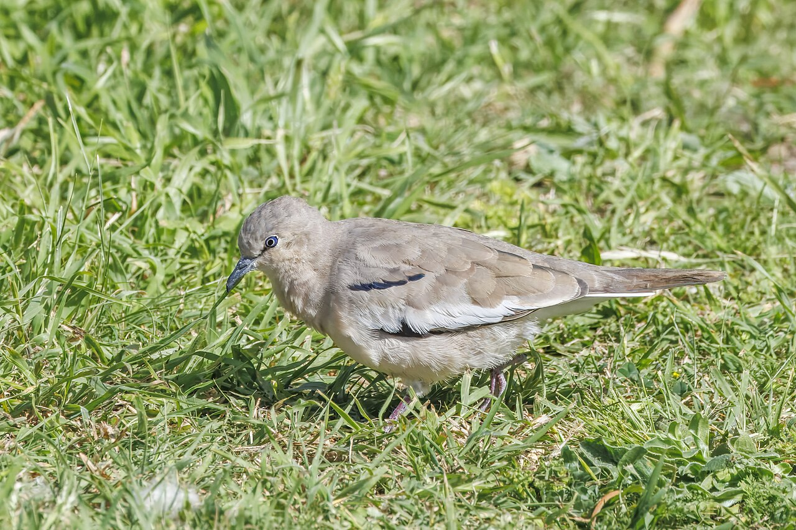

Lula.
diario de la mañana — el mundo, tu ciudad y lo que te asombra
Buen día, viernes. Día inestable: de 19° a 26°, con chaparrones a la mañana y tormentas a la tarde —el SMN le da entre 40 % y 70 % de probabilidad—, y mejora para el fin de semana. Que, además, es largo: el feriado por el Día de la Soberanía se trasladó al lunes 23. La ciencia de hoy es de esas que cambian el humor: cada generación está llegando a la vejez con mejor memoria que la anterior.
- El mundo en cinco minutos3'
- Argentina y Buenos Aires2'
- Ciencia: memorias que envejecen mejor6'
- Mirá a tu alrededor2'
- Receta de estación2'
- La palabra del día1'
- Le français du matin2'
- English corner3'
- Viernes de música: Walton4'
- Hoy en la historia · un lugar2'
- Lo que me asombra hoy1'
- Pasatiempo: sudoku medio12'
- Cuaderno: repaso, quiz y escritura4'
Cómo terminó la APEC: mucha declaración, poco acuerdo
La cumbre cerró ayer al mediodía en Shenzhen con una Declaración de Líderes aprobada por consenso, un documento de hoja de ruta —las «Perspectivas de Shenzhen»— y tres textos sobre facilitación del comercio, conectividad regional e innovación. Respalda la cooperación en inteligencia artificial con una iniciativa 2026-2030, pero sin obligaciones regulatorias comunes, y suma un compromiso sobre acceso a la energía. Y de la reunión trilateral salió una declaración sobre reducción de riesgos nucleares, seguridad energética y reforma de la ONU.
Con las pinzas puestas: los medios se dividen. Algunos cuentan cincuenta avances comerciales; France 24 la describe como una edición sin progresos económicos significativos. Las dos cosas pueden ser ciertas: una cumbre produce documentos, y lo que se mide después son hechos. Lo verificable hoy es que existe un texto trilateral sobre riesgo nuclear que el lunes no existía. Cuánto vale se sabrá por si alguien lo invoca.
Lo demás: la próxima APEC es en Vietnam en 2027 y la de 2028, en México · siguen las protestas en Francia por el costo de vida.
Hoy es el Día de la Soberanía, pero el feriado es el lunes
La fecha conmemora la batalla de la Vuelta de Obligado, del 20 de noviembre de 1845, y la estableció la ley 20.770, de 1974. Pero el feriado nacional de este año está trasladado al lunes 23: hoy es día hábil normal. Fin de semana largo de tres días, entonces, del sábado al lunes.
La semana que viene: el Presupuesto 2027 se trata en el recinto de Diputados el miércoles 25 y la suspensión de las PASO en el Senado el jueves 26. Con el feriado del lunes, el Congreso tiene tres días útiles para definir el paquete entero del año.
Para el fin de semana largo
- Filarmónica en el Colón: mañana sábado a las 20 y domingo a las 17, con Walton y Sibelius. Y mañana a las 11, ensayo general abierto y gratuito por «Barrios al Colón». Es la mejor forma de escuchar una orquesta sin pagar entrada.
- Macciò en el Bellas Artes (Libertador 1473), gratis, hasta febrero.
- Ciclo John Huston en la Sala Lugones, hasta el 4 de diciembre.
Llegamos a viejos con mejor memoria que nuestros abuelos
De qué estamos hablando: de memoria episódica —la de los hechos con fecha y lugar, la que se mide pidiéndole a alguien que recuerde una lista de palabras media hora después— y de cómo cambia con la edad. La pregunta del trabajo no es si declina, que declina, sino si declina igual en todos los que nacieron en distintas décadas. La respuesta, publicada esta semana en Nature Medicine por el grupo de Anders Fjell en Oslo, es que no: cada cohorte está envejeciendo mejor que la anterior.
Quién es quién
- Cohorte de nacimiento: el grupo de los nacidos en una misma década. Comparar cohortes a la misma edad es la única manera de separar lo que le pasa a una persona al envejecer de lo que le pasa a una época.
- Estudio longitudinal: se mide a las mismas personas varias veces a lo largo de los años, en vez de comparar jóvenes con viejos una sola vez. Es más caro, más lento y la única forma de medir pendientes de declive.
- Reserva cognitiva: la idea de que la educación, el trabajo intelectual y la actividad social no evitan la patología cerebral pero permiten tolerar más patología antes de mostrar síntomas. Explicaría cómo dos cerebros con el mismo daño rinden distinto.
- Incidencia de demencia: casos nuevos por año en una población. No es lo mismo que la prevalencia —cuántos hay en total—, que puede subir aunque la incidencia baje, simplemente porque vivimos más.
Qué encontraron
- Reunieron unas 783.000 evaluaciones de memoria episódica de alrededor de 219.000 personas, tomadas de cinco estudios longitudinales, con seguimientos de hasta 30 años.
- Las cohortes más recientes llegan a la vejez con un nivel de partida más alto de memoria. Eso ya se sabía.
- Lo nuevo es que además declinan más despacio. Los autores lo llaman un «doble dividendo»: empezás más arriba y bajás con menos pendiente.
- En números: por cada década de nacimiento más reciente, las personas resultaron alrededor de un 64 % más propensas a mantener la memoria estable.
- Los autores lo vinculan con la caída de la incidencia de demencia, estimada en torno al 13 % por década en Europa y Estados Unidos.
Lectura crítica
- El sesgo de participación muerde fuerte. En un seguimiento de treinta años, los que siguen viniendo a los controles son sistemáticamente los más sanos y los más educados. Si ese sesgo cambió con el tiempo, parte del «doble dividendo» es un artefacto de quién se quedó.
- El efecto de práctica. A la gente se le administra el mismo test varias veces y mejora por repetición, no por memoria. Los buenos análisis lo corrigen estadísticamente, pero la corrección depende del modelo, y en comparaciones entre cohortes con distinto número de visitas es un punto delicado.
- La causa queda abierta y es lo más interesante. Más años de educación, menos tabaco, mejor control de la presión, menos plomo en el ambiente, mejor nutrición infantil: todo candidato y ninguno demostrado acá. Es epidemiología observacional; muestra la tendencia, no el motor.
La conexión con lo que estudiás
Esto es diseño de estudios puro, y esquiva la trampa que más confunde en bioestadística: la diferencia entre un efecto de edad, uno de período y uno de cohorte. Si comparás hoy gente de 40 con gente de 80 y los de 80 recuerdan menos, no sabés si es porque envejecieron o porque fueron a la escuela cinco años menos. Las tres variables están linealmente relacionadas —edad = período menos cohorte—, así que no se pueden estimar las tres a la vez sin supuestos: es un problema de identificabilidad, no de falta de datos. La moraleja práctica: cuando leas «los jóvenes de hoy tienen peor X», preguntate cuál de los tres efectos te están mostrando.
Estudio del grupo de Anders Fjell (Universidad de Oslo) en Nature Medicine, noviembre de 2026. La nota de Nature que lo resume está acá; las fuentes dan el 17 y el 19 de noviembre como fecha, y los números los tomé de esa cobertura, no del paper.
Biotec en el mundo real · la neurociencia del envejecimiento, acá
Un problema de este tipo de estudios es que casi todos se hacen en poblaciones del norte global. La respuesta latinoamericana se llama ReDLat, la Red Latinoamericana de Investigación en Demencias, una colaboración multipaís —con fuerte participación argentina— financiada en parte por los Institutos Nacionales de Salud de Estados Unidos.
- Por qué hace falta: los factores de riesgo de demencia no pesan igual en todos lados. Desigualdad, acceso a la salud, exposiciones ambientales y perfiles genéticos distintos hacen que un modelo entrenado en Europa rinda peor acá. Es el mismo problema que vimos con las bases de variantes genéticas.
- Qué producen: cohortes locales con imágenes, electrofisiología, genética y marcadores en sangre, armonizadas para que sean comparables entre países.
- La parte argentina: se apoya en instituciones de Buenos Aires dedicadas a neurología y neurociencia cognitiva, y en el CONICET.
- Salida laboral: gestión y coordinación de cohortes, análisis de neuroimágenes, bioestadística, biobancos. Es un sector donde la demanda crece y donde una biotecnóloga con estadística fuerte entra bien.
Ciencia en la vida cotidiana · Por qué estudiar salteado funciona mejor
El efecto más sólido de toda la psicología del aprendizaje se llama espaciamiento: la misma cantidad total de horas rinde mucho más repartida en días que junta en una sesión. La explicación aceptada es que cada recuperación de un recuerdo poco antes de que se pierda lo vuelve a consolidar y le agrega contextos de codificación distintos, de modo que después hay más caminos para llegar a él. Estudiar de corrido genera una sensación de dominio —la fluidez de lo que acabás de leer— que el cerebro confunde con aprendizaje.
Lo práctico, para la facultad: releer es la peor técnica por hora invertida y la que más tranquiliza. La mejor es autoevaluarse: cerrar el apunte e intentar reconstruirlo, aunque salga mal. Que salga mal es parte del mecanismo.
El ailanto, que crece en cualquier grieta, y la torcacita


_Costanera_Norte.jpg){kind=link}
El árbol: ailanto o árbol del cielo
| Nombre científico | Ailanthus altissima (Simarubáceas). Del noreste de China. En Buenos Aires crece solo: en baldíos, en medianeras, entre las baldosas, en los terraplenes del tren. |
|---|---|
| Cómo reconocerlo | Hoja compuesta enorme, de hasta un metro, con muchos folíolos enfrentados y —esto es la firma— dos o tres dientes gruesos cerca de la base de cada folíolo, cada uno con una glándula en la punta. Si rompés una hoja, el olor es desagradable, a manteca rancia. En verano se llena de racimos de sámaras rojizas. |
| Lo asombroso | Es de los invasores más eficaces del mundo y pelea con armas químicas: sus raíces liberan ailantona, una quassinoide que inhibe la germinación de casi cualquier otra planta alrededor. Eso es alelopatía, y explica por qué debajo de un ailanto no crece nada. Además rebrota de raíz: si lo cortás, aparecen veinte. Llegó a Occidente en el siglo XVIII por una ilusión fallida: se lo trajo para criar sobre él la mariposa de la seda del ailanto y competir con la seda china. El negocio no funcionó; el árbol se quedó. |
El ave: torcacita común
| Nombre científico | Columbina picui (Colúmbidos). Una paloma en miniatura: 15 centímetros, gris clarita, con una línea blanca muy marcada en el ala que se ve sobre todo cuando vuela, y la cola con los bordes blancos. |
|---|---|
| Cómo reconocerla | Casi siempre en el piso, caminando rápido en parejas, en plazas, canteros y veredas. Es la paloma más chica que vas a ver en la ciudad y la más mansa: deja acercarse bastante antes de volar, y cuando vuela hace un ruido de alas seco, como un aplauso corto. |
| Lo asombroso | Toma agua por succión, sin levantar la cabeza. Casi todas las aves tienen que llenar el pico y echar la cabeza hacia atrás para que el agua baje por gravedad; las palomas, no: meten el pico y chupan, usando la lengua y el esófago como una bomba. Es una de las pocas excepciones del mundo aviar, y es la razón por la que una paloma puede beber sin dejar de vigilar el horizonte. En un animal que es comida de todos, eso vale más de lo que parece. |
Misión de la semana
Hummus que queda liso de verdad
El secreto no es la procesadora: es el bicarbonato.
Ingredientes
- 250 g de garbanzos secos (o 2 latas, si hay apuro)
- 1 cucharadita de bicarbonato para el remojo y otra para la cocción
- 120 g de tahini, jugo de 1 limón y medio, 1 diente de ajo
- Sal, comino, aceite de oliva, agua helada
Pasos
- Remojá los garbanzos toda la noche con una cucharadita de bicarbonato.
- Hervilos con la otra cucharadita hasta que se deshagan al apretarlos: más de lo que creés, 45 a 60 minutos.
- Procesá los garbanzos calientes con ajo, limón y sal.
- Agregá el tahini y, con la máquina andando, un chorrito de agua helada. Ahí blanquea y se vuelve cremoso.
- Aceite de oliva, comino y pimentón arriba.
La química de la receta
Por qué el bicarbonato: hace tres cosas a la vez, todas por subir el pH. Primero, el medio alcalino rompe los enlaces de la pectina de la pared celular por un mecanismo de β-eliminación, así que las células se separan y el garbanzo se deshace. Segundo, facilita que el almidón se hidrate y gelatinice. Y tercero, debilita la piel —la testa, que es casi pura celulosa y hemicelulosa— y hace que se desprenda sola durante la cocción: la espuma con cascaritas que ves flotando es exactamente lo que no querés en el hummus. Sin bicarbonato podés procesar diez minutos y siempre vas a tener arenilla.
Y el agua helada al final: el tahini es una emulsión de aceite de sésamo con las partículas sólidas de la semilla. Al agregar agua fría de a poco con la máquina en marcha, el agua se dispersa en gotitas dentro de esa fase grasa y después el sistema se invierte: pasa a ser una emulsión de aceite en agua, mucho más clara y más liviana. Por eso el hummus blanquea de golpe, casi de un segundo al otro. Fría, porque el calor desestabiliza la emulsión y la cortaría.
soberanía sustantivo
latín vulgar superanus (que está por encima), de super → francés antiguo soverain → castellano soberano, soberanía · inglés sovereignty
La palabra es literal: el soberano es, etimológicamente, «el de arriba». El latín clásico no la tenía; se armó en el latín tardío sobre super con el mismo sufijo que da «romano» o «cristiano», y pasó al castellano por el francés. De ahí viene también, por otro camino, «soberbio» —super + bia, el que se pone por encima— que es la misma idea con peor prensa.
El concepto político es moderno y bastante preciso: Jean Bodin lo definió en 1576 como el poder que no reconoce otro por encima dentro de un territorio. Por eso la fecha de hoy se llama así y no «Día de la Victoria»: en la Vuelta de Obligado la escuadra anglo-francesa pasó: rompió las cadenas y siguió navegando. Lo que se conmemora no es haber ganado la batalla, sino haber discutido el derecho de otro a entrar sin permiso. La soberanía, en esa historia, es exactamente la pregunta de quién está por encima de quién en un río.
Le, la, les
— C'est un livre ou une revue ?
— C'est un livre. Le livre de ma sœur.
— Et ça, ce sont les photos ?
| un / une / des | un / una / unos [an / ün / de] |
|---|---|
| le / la / les | el / la / los-las [le / la / le] |
| une revue | una revista [ün re-VÜ] |
| ce sont… | son… (plural de c'est) [se SON] |
Un truco
Dos cosas que te van a ahorrar errores. Una: el género no siempre coincide con el castellano. La mesa es une table (bien), pero el mar es la mer, la leche es le lait y el problema es le problème en los dos, mientras que la sangre es le sang. No hay regla: se aprende con el artículo pegado. Por eso, cuando anotes una palabra nueva, anotala siempre con el artículo: nunca «table», siempre «une table». Dos: le y les se pronuncian distinto —[le] con la boca casi cerrada, [le] más abierto— pero en la práctica te vas a guiar por el verbo que sigue.
The movable feast
Argentina commemorates a nineteenth-century battle today and will take the day off on Monday. The practice of shifting public holidays to produce a long weekend strikes some people as a small civic betrayal: if the date matters, observe the date. If it does not, why keep it at all?
The defence is unsentimental and, on its own terms, convincing. Tourism inside the country depends on three-day weekends in a way that a scattered Tuesday cannot replicate; hotels, coaches and provincial economies plan around them. A holiday that falls mid-week is largely absorbed by people staying at home, which is pleasant but moves no money.
Still, something is lost that is hard to put a figure on. A date remembered on its anniversary carries a faint sense of the thing itself; detached from it, the holiday becomes a slot in the calendar, and within a generation few people could tell you what it is for. Commemoration survives, in other words, only as long as somebody is mildly inconvenienced by it.
- to shift — correr, mover
- a civic betrayal — una traición cívica
- on its own terms — según su propia lógica
- to replicate — reproducir
- to be absorbed by — quedar diluido en
- to put a figure on — ponerle un número a
- detached from — desprendido de
- mildly inconvenienced — levemente incomodado
Walton: el concierto que escribió con una tarántula encima
Si mañana vas al Colón, la primera mitad es esta. William Walton (1902-1983) era inglés, se había hecho famoso jovencísimo y vivía en Italia. Jascha Heifetz —el violinista más técnicamente perfecto del siglo, y el más temido— le encargó un concierto. Walton lo escribió entre 1938 y 1939 en Ravello, sobre la costa amalfitana, y se lo dedicó. Lo estrenó Heifetz en Cleveland, el 7 de diciembre de 1939, con Artur Rodziński dirigiendo. Walton no pudo ir: había empezado la guerra.
| I. Andante tranquillo | Empieza el violín casi solo, con una melodía larga y agria, muy privada. No hay fanfarria ni presentación orquestal: la obra arranca ya adentro de algo. Escuchá cómo la orquesta entra por debajo, sin interrumpir. |
|---|---|
| II. Presto capriccioso alla napolitana | El movimiento del chiste. Es una tarantela napolitana vertiginosa, y Walton contó que la escribió después de que lo picara una tarántula en Ravello. La tarantela era, según la tradición popular del sur de Italia, el baile frenético con el que se curaba esa picadura. El chiste es doble: el bicho y la cura están los dos en la partitura. |
| III. Vivace | Arranca marcial y termina volviendo, transformado, al material del primer movimiento. Ese regreso —el final que recuerda el principio en vez de superarlo— es lo que le da el tono melancólico que la obra tiene debajo de todo el virtuosismo. |
Walton lo reorquestó en 1943 y le sacó percusión: le pareció que tapaba al violín. Esa es la versión que se toca hoy.
Dónde: Filarmónica de Buenos Aires en el Colón, mañana sábado 21 a las 20 y domingo 22 a las 17, con Elias Grandy y Frank Peter Zimmermann como solista. Después va la Suite Lemminkäinen de Sibelius, de la que hablamos el viernes pasado. Y mañana a las 11 hay ensayo general abierto y gratuito.
20 de noviembre de 1845: la Vuelta de Obligado
Una escuadra combinada anglo-francesa remontaba el Paraná para abrir el comercio con el litoral y con Paraguay sin permiso del gobierno de Buenos Aires. En un recodo cerrado del río, en el paraje de la Vuelta de Obligado, las fuerzas de la Confederación tendieron tres cadenas sostenidas por lanchones de orilla a orilla y emplazaron baterías en la barranca. La escuadra rompió las cadenas después de varias horas de combate, pasó y siguió viaje.
Es decir: militarmente fue una derrota. Lo que se conmemora es otra cosa. La resistencia encareció tanto la operación —y la navegación posterior resultó tan poco rentable frente a la hostilidad de la costa— que Gran Bretaña y Francia terminaron firmando tratados que reconocían la soberanía argentina sobre los ríos interiores. Se perdió la batalla y se ganó el principio.
El lugar: el recodo del Paraná, en San Pedro
| Dónde | A unos 18 km de la ciudad de San Pedro, provincia de Buenos Aires, a 180 km de la Capital. El lugar se eligió por la geografía: ahí el río se angosta y describe una curva cerrada, de modo que los barcos tienen que reducir la velocidad y quedan expuestos a las baterías de la barranca. |
|---|---|
| Qué hay | Un parque histórico con monumento, miradores sobre el río y réplicas de los cañones. Es un buen paseo de fin de semana largo, y se combina con San Pedro, que tiene costanera. |
Durante casi un siglo nos fuimos volviendo más inteligentes, y después dejamos
Se llama efecto Flynn, por el politólogo neozelandés James Flynn, que en los años ochenta notó algo que estaba a la vista y nadie había juntado: los tests de inteligencia se recalibran cada cierto tiempo para que el promedio vuelva a dar 100. ¿Por qué haría falta recalibrarlos, si la media siempre es 100 por definición? Porque la gente iba sacando cada vez más puntaje con el baremo viejo. Al reconstruir la serie, el aumento resultó enorme y sostenido: del orden de tres puntos por década durante casi todo el siglo XX, en todos los países con datos.
Lo más interesante es dónde estuvo la mejora. No fue parejo: los ítems de vocabulario y de conocimiento general casi no se movieron, y los que se dispararon fueron los de razonamiento abstracto —clasificar, encontrar la regla, operar con categorías—, justamente los que se suponían más independientes de la cultura. La hipótesis de Flynn es que el siglo XX nos entrenó en pensar en abstracto: escolarización masiva, trabajos que manipulan símbolos, menos tareas concretas.
Y el final tiene su giro: en varios países del norte de Europa el efecto se detuvo y en algunos se invirtió desde los noventa. No se sabe por qué. Lo que sí queda claro es que lo que mide un test de inteligencia es más maleable, y más histórico, de lo que su nombre sugiere. Conviene tenerlo presente cada vez que se habla de «la inteligencia» como si fuera una propiedad fija.
El del viernes
Repaso y quiz de la mañana
Repaso de idiomas
Quiz
El «doble dividendo» del estudio de hoy es que las cohortes más nuevas…
El sesgo más serio de un estudio longitudinal de 30 años es…
Edad, período y cohorte no se pueden estimar juntos porque…
El bicarbonato en el hummus sirve sobre todo para…
Debajo de un ailanto no crece nada porque…
El efecto Flynn describe…
Escritura
- Quiz: empiezan más arriba y declinan más despacio · los que siguen son los más sanos · identificabilidad · romper la pectina y la piel · alelopatía por ailantona · el aumento del puntaje durante el siglo XX.
- Repaso: j'aime lire · ça me plaît · une revue · deducir o calcular · quedarse quieto · correr o mover.
- Francés: por ejemplo, «un livre, une table, une revue, un stylo, une chaise».
Sudoku:
Fuentes de esta edición
- Mundo: France 24: el cierre de la APEC · los documentos finales
- El feriado: Infobae: por qué el feriado es el lunes 23
- Clima: Canal 26, con datos del SMN · Meteored
- Ciencia: Nature: la memoria de las nuevas cohortes (el paper, en Nature Medicine) · CONICET
- Música e historia: Teatro Colón: «Romanticismo tardío» · el concierto de Walton · Secretaría de Cultura: la Vuelta de Obligado
Mañana, sábado: ballet, y una edición más tranquila. — Lula.